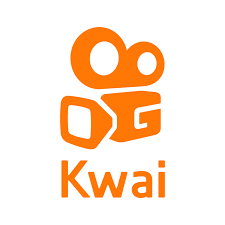
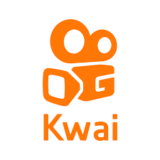

Conectamos marcas com os melhores creators e monitoramos tudo o que acontece nas redes para garantir estratégias assertivas e eficazes.
Entre em contato e descubra como podemos transformar sua estratégia digital.


 
